4.4. Utilisation de OSMTracker
Objectifs du cours
Dans cette section, vous devriez être capable de :
- Comprendre comment configurer OSMTracker pour votre téléphone
- Comprendre le fonctionnement de base d’OSMTracker
Activités d’apprentissage
OSMTracker est une application Android qui nous permet d’enregistrer nos données d’enquête. Tout comme le GPS, OSMTracker est capable d’enregistrer des points de repère et de suivre des pistes. Ce qui différencie OSMTracker d’un GPS classique, c’est sa capacité à prendre des photos lors de la collecte des données d’enquête. Ces images facilitent la cartographie car elles permettent de retrouver l’objet pris et d’examiner les photos pour plus de détails. Les points de cheminement et les traces que vous avez collectés peuvent être convertis en fichiers .gpx afin que vous puissiez ouvrir vos données d’enquête à l’aide de JOSM ou télécharger directement vos données dans OpenStreetMap.
Téléchargement et installation
Si vous souhaitez utiliser OSMTracker, vous pouvez télécharger l’application sur votre smartphone. Ouvrez votre Google Playstore et recherchez OSMTracker dans le champ de recherche.

Une fois l’installation terminée, ouvrez l’application OSMTracker sur votre smartphone.

Configuration initiale pour OSMtracker
Avant de pouvoir utiliser OSMTracker, vous devez effectuer quelques réglages. Allez sur

dans le coin supérieur droit, puis sélectionnez Paramètres.
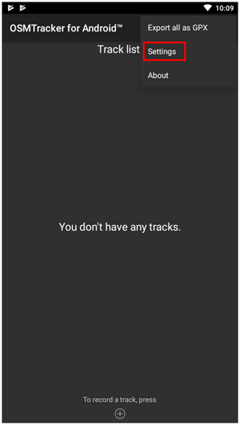
Sur la page des paramètres, il y a plusieurs choses que vous devez vérifier :

-
Intervalle d’enregistrement GPS Cette section permet de définir la fréquence à laquelle votre OSMTracker enregistre la piste. Si vous diminuez la valeur, OSMTracker enregistrera la piste plus souvent. La valeur par défaut de ce paramètre est 0, ce qui signifie que le OSMTracker enregistrera toujours votre piste.
Note: Cela affectera la durée de vie de votre batterie. Vous pouvez modifier le nombre en fonction de vos besoins, par exemple 2 secondes.
-
Répertoire de stockage externe (SD)
Cette section détermine l’endroit où vous souhaitez enregistrer toutes vos données d’enquête sur votre smartphone. Par défaut, OSMTracker créera un nouveau dossier appelé “osmtracker” sur le stockage interne de votre smartphone. Si vous ne souhaitez pas modifier ce paramètre, vous pouvez ignorer cette section. -
Un répertoire par piste
If you activate this feature, each track you save will create a new folder in your internal storage. -
Nom du fichier pour la piste nommée Cette section permet de définir l’étiquetage des données d’enquête. Par défaut, l’étiquetage se compose du nom de la piste, de la date de l’enquête et de l’heure de l’enquête. Vous pouvez ignorer ce paramètre si vous ne souhaitez pas le modifier.
-
Écran toujours allumé Si vous activez cette fonction, votre smartphone sera toujours allumé lorsque vous utiliserez OSMTracker. Lorsque vous utilisez ce paramètre, la batterie de votre smartphone s’épuise rapidement. Vous pouvez modifier ce paramètre selon vos besoins.
-
Carte de fond. Utilisez ce paramètre pour afficher la carte en arrière-plan sur votre trace. Activez ce paramètre pour que vous puissiez voir votre piste d’enquête avec une carte en arrière-plan
-
Fournisseur de tuiles de carte. Vous pouvez modifier votre carte d’arrière-plan à l’aide de cette fonction
Une fois tous les réglages effectués, vous êtes prêt à utiliser votre OSMTracker. N’oubliez pas d’activer votre GPS sur votre smartphone, puis vous pourrez ouvrir votre OSMTracker. Si vous utilisez OSMTracker pour la première fois, votre page d’accueil sera vide. Plus tard, toutes les données de votre enquête s’afficheront sur votre page d’accueil.
Opérations basique avec OSMTracker
1. Enregistrement de la piste d’enquête
Si vous souhaitez démarrer l’enregistrement des traces, vous pouvez sélectionner le bouton + en haut à droite de votre écran. Vous verrez la page Track Logger.

N’oubliez pas de toujours vérifier la précision de votre GPS. Toutes les fonctions de l’OSMTracker ne seront pas disponibles si vous ne recevez pas un bon signal GPS. Essayez d’obtenir la meilleure précision GPS possible (moins de 10 mètres) afin d’éviter toute erreur lors de l’enregistrement de votre position actuelle. Vous pouvez voir l’indicateur de signal GPS dans le coin supérieur droit de votre écran (voir l’image). La couleur de la barre de signal passe au vert et devient pleine lorsque vous recevez un bon signal. Assurez-vous que vous êtes dans une bonne position pour recevoir le signal. Repérez-vous sur le terrain et assurez-vous que vous n’êtes pas sous un toit ou un arbre.

Lorsque la précision du GPS est suffisante, vous pouvez commencer à enregistrer votre trace. Lorsque vous appuyez sur le bouton + et que la précision du GPS est suffisante, OSMTracker enregistre automatiquement votre trace.
2. Enregistrement d’un objet à l’aide de points de repère et d’une image
Lorsque vous ouvrez votre page Track Logger, vous avez accès à de nombreux boutons, mais si vous souhaitez enregistrer des waypoints et des photos, vous n’avez qu’à utiliser ces deux boutons :
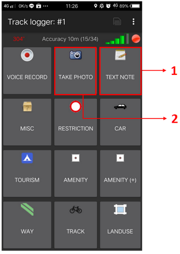
1. Note de texte Utilisez la note de texte pour marquer votre position actuelle comme point de repère. Il vous suffit d’appuyer sur ce bouton et de renseigner les informations. Par exemple, vous pouvez étiqueter votre point de repère avec un numéro, puis le nom de votre objet.
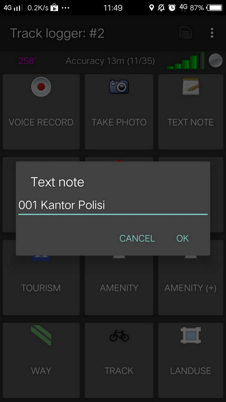
2. Prendre une photo Utilisez l’option Prendre une photo pour prendre vos photos d’objets. Vous pouvez utiliser directement l’appareil photo de votre smartphone ou sélectionner une photo dans votre galerie.
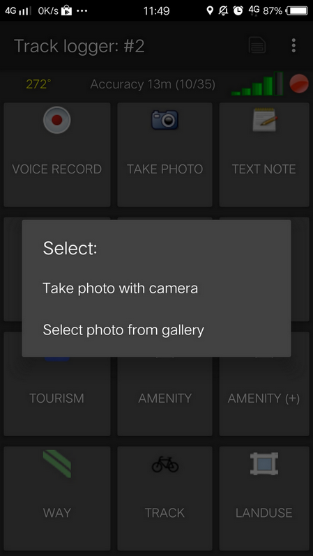
3. Arrêter et poursuivre l’enregistrement d’une piste
Si vous souhaitez interrompre votre enregistrement, vous pouvez suivre les étapes suivantes :
- Sur la page Track Logger, retournez à votre page d’accueil, puis trouvez un fichier de trace que vous avez déjà collecté. Appuyez sur ce fichier pendant un certain temps jusqu’à ce qu’un menu supplémentaire s’affiche.
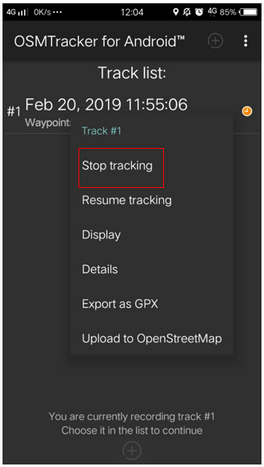
- Choisissez Stop tracking.
- Vous pouvez aussi appuyer
dans le coin supérieur de votre page Track Logger pour arrêter l’enregistrement et le sauvegarder.
Si vous souhaitez poursuivre votre action sur votre dossier précédent, vous devez alors:
- Appuyez sur le fichier précédent jusqu’à ce que le menu supplémentaire s’affiche.
- Sélectionner ensuite Reprendre la piste

| Astuces: |
|---|
| Si votre fichier comporte une icône d’horloge de couleur orange, cela signifie que votre fichier est toujours en mode d’enregistrement de piste. Cette icône disparaîtra lorsque vous aurez arrêté et sauvegardé votre fichier. |
4. Liste des objets collectés
Vous pouvez voir la liste des objets que vous avez collectés. Sur la page Track Logger, appuyez sur le bouton
dans le coin supérieur droit de votre écran, puis sélectionnez Waypoints.

La liste des objets et les photos que vous avez collectées s’affichent dans la liste des points de repère.

5. Affichage des traces et des points de cheminement collectés
Vous pouvez également consulter votre trace et les points de passage que vous avez collectés. Sur la page de votre journal de bord, choisissez le menu
dans le coin supérieur droit de votre écran, puis sélectionnez Afficher la piste.
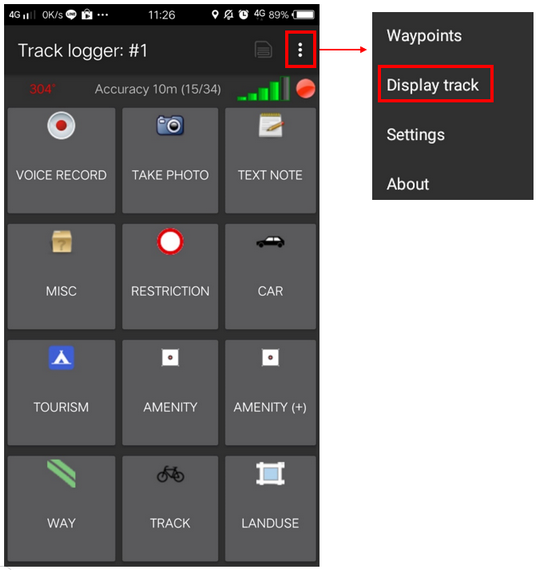
Lorsque vous choisissez d’afficher votre trace, OSMTracker vous demandera la permission d’afficher la carte en arrière-plan. Sélectionnez Afficher le fond de carte.
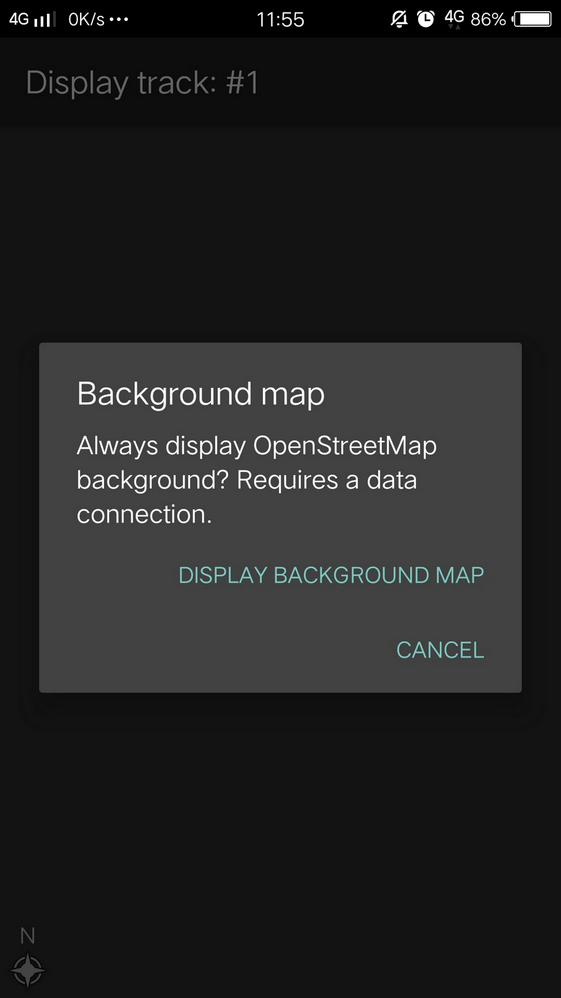
Vous verrez la carte avec une ligne, une étoile et une icône de personne en haut de la carte. L’icône d’étoile représente les points de passage, la ligne représente la piste que vous avez collectée et l’icône de personnes indique votre position actuelle sur la carte.

6. Sauvegarde des données OSMTracker
Après avoir collecté les données, vous pouvez les enregistrer et les utiliser pour votre guide cartographique. Pour ce faire, vous devez enregistrer vos données d’enquête au format .gpx. Vous pouvez ensuite les télécharger sur le serveur OpenStreetMap ou les transférer sur votre ordinateur portable.
7. Sauvegarde des traces et des points de cheminement sous forme de données .gpx
Vous pouvez enregistrer vos traces et vos points de passage dans des données .gpx. Vous pouvez ouvrir les données .gpx avec des logiciels de cartographie tels que QGIS et JOSM. Dans votre fichier d’enquête, sélectionnez et appuyez sur le fichier pendant un moment, puis sélectionnez Exporter en tant que GPX. Si le processus est réussi, vous pouvez voir le point vert à droite du nom du fichier.
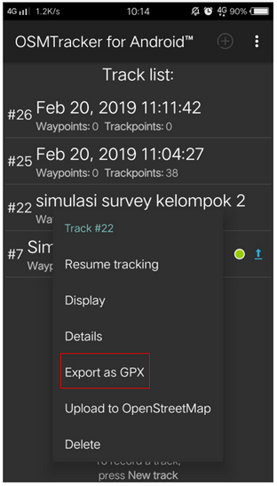
8. Téléchargement d’une piste sur le serveur OpenStreetMap
Vous pouvez télécharger vos données d’enquête sur le serveur OpenStreetMap. Sur votre fichier d’enquête, appuyez sur la touche et maintenez-la enfoncée pendant un moment, puis sélectionnez Upload to OpenStreetMap.
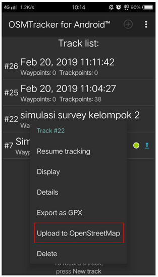
Sur la page OpenStreetMap Upload, vous devez remplir le formulaire comme le nom et la description du fichier. Vous pouvez ignorer la section Tags. Dans la section inférieure, vous pouvez définir la piste pour:
-
Privé La trace ne sera pas montrée au public. Il est possible d’accéder aux points de trace sur la séquence temporelle à l’aide de l’API GPS sans horodatage.
-
Publique La piste sera montrée au public et pourra être téléchargée par l’autre utilisateur.
-
Traçable La trace sera montrée au public, mais les points de trace peuvent toujours être accédés par l’API GPS publique. D’autres utilisateurs peuvent télécharger vos données mais elles ne seront pas connectées avec vous.
-
Identifiable La trace sera affichée au public. D’autres utilisateurs peuvent télécharger vos données et se référer à votre nom d’utilisateur OSM.
Pour cette option, vous pouvez choisir Traçable ou Public afin qu’un autre utilisateur puisse télécharger vos données.

9. Copier une piste et un point de cheminement sur un ordinateur portable ou un ordinateur de bureau
Toutes les données .gpx sont stockées dans la mémoire interne de votre smartphone. Vous pouvez rechercher le fichier à l’aide de votre gestionnaire de fichiers. Pour copier les données, vous pouvez suivre les instructions suivantes:
- Connectez votre smartphone à votre ordinateur portable à l’aide du câble de votre smartphone, puis recherchez le dossier “osmtracker” dans votre smartphone.

- Dans votre dossier OSMTracker, vous trouverez un dossier contenant des données .gpx et des photos. Copiez l’ensemble du dossier sur votre ordinateur portable.
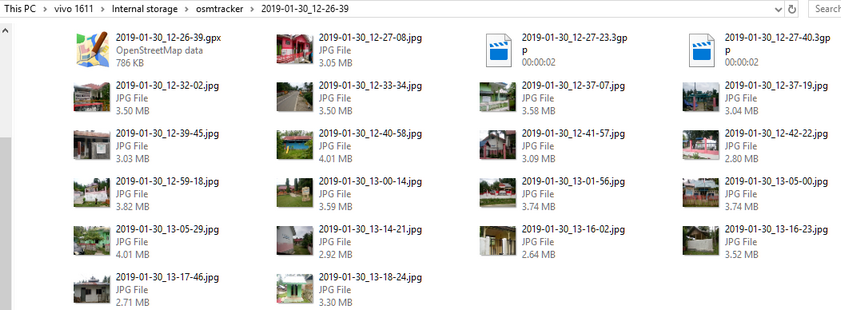
- Ouvrez votre JOSM, puis ouvrez vos données gpx. Sélectionnez le menu Fichier → Ouvrir, puis ouvrez le format de données .gpx.

- Lorsque vous ouvrez votre fichier .gpx, JOSM affiche automatiquement la trace et le waypoint ainsi que la photo.
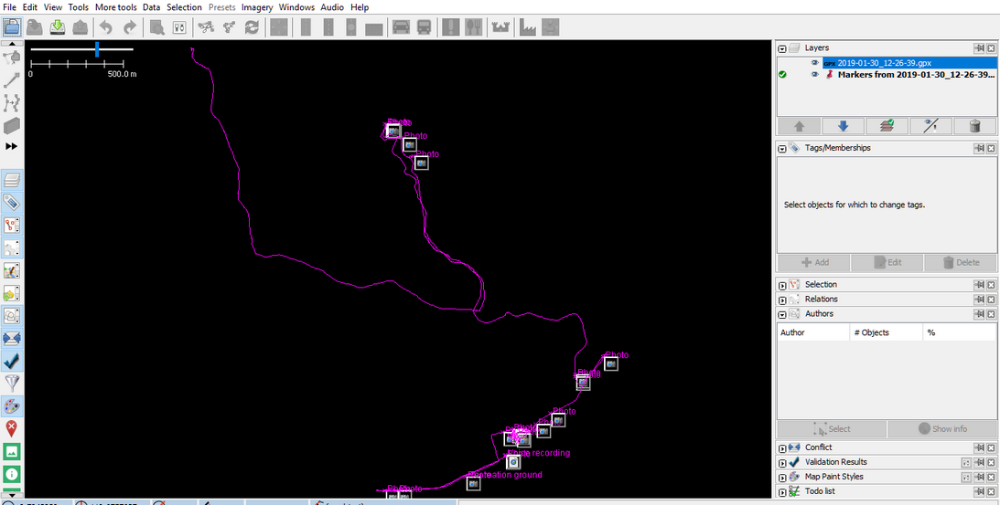
Vous pouvez utiliser les résultats de votre enquête pour vous guider dans votre travail de cartographie avec le JOSM. Les photos prises vous aideront à identifier l’objet que vous devez créer dans le JOSM.
[Quiz] Testez vos connaissances
-
Pour commencer à utiliser OSMTracker, vous devez d’abord activer le GPS, puis ouvrir OSM Tracker.
a. Vrai
b. Faux
-
Laquelle des options suivantes devons-nous choisir si nous voulons télécharger notre trace sur le serveur OSM qui sera affiché au public et d’autres utilisateurs peuvent télécharger les données de votre trace et se référer à votre nom d’utilisateur?
a. Privé
b. Publique
c. Traçable
d. Identifiable
-
Si vous commencez à suivre une piste avec OSMTracker et que vous voulez l’arrêter soudainement pour plusieurs raisons, OSMTracker ne peut pas reprendre votre piste et vous devez appuyer sur Start tracking again plus tard. OSMTracker ne peut pas reprendre votre trace et vous devez appuyer à nouveau sur Démarrer le suivi plus tard.
a. Vrai
b. Faux
-
OSMTracker ne peut pas charger des images dans le JOSM pour vous aider à identifier l’objet.
a. Vrai
b. Faux
Answer: 1. B | 2. D | 3. B | 4. B
Liste de contrôle des activités
À la fin de cette section, vous devriez être en mesure d’utiliser OSMTracker efficacement, pour vous en assurer, veuillez vérifier si toutes les connaissances suivantes s’appliquent :
- Capable d’installer OSMTracker pour la première fois.
- Capacité à exécuter des opérations de base dans OSMTracker, telles que l’enregistrement d’une trace, l’enregistrement d’un objet, l’arrêt et la poursuite d’une trace, la sauvegarde d’une trace et d’un waypoint, et l’ouverture des données dans le JOSM.